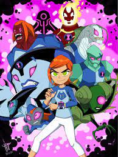
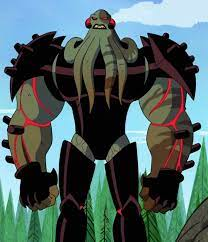

ben 10 original side characters
granpa max

description
Maxwell "Max" Tennyson, or Grandpa Max as his grandchildren call him, is the paternal grandfather of cousins Ben Tennyson and Gwen Tennyson. He is in his 60's, rather a biggie boi and a bit slow at times, but rather a handsome chad. His past life was a plumber.
gwen

Personality. In the original series, Gwen is portrayed as an intelligent, mature but usually stubborn and smart-mouthed when it came to talking with Ben. Her quick thinking and good instincts give her an edge in dealing with dangerous situations. As she got older, she became even more mature, caring, and sympathetic.
vilgax

Vilgax is an intergalactic alien warlord and conqueror, a Chimera Sui Generis who serves as Ben's archenemy, and the most recurring villain in the ongoing franchise, having appeared multiple times in every series. Ben considers him as one of the most dangerous villains he has faced.
kevin levin
 Kevin can absorb solid materials, coating himself in the substance which allows him to take on its properties. He will proportionally increase in physical strength and durability to whatever he absorbed. Kevin is able to absorb multiple materials at once.
Kevin can absorb solid materials, coating himself in the substance which allows him to take on its properties. He will proportionally increase in physical strength and durability to whatever he absorbed. Kevin is able to absorb multiple materials at once.